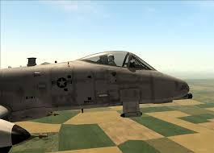
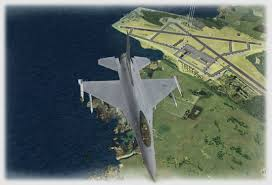
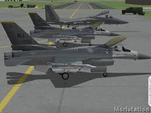
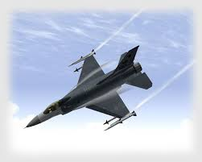
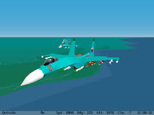
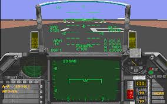

About Us
The 62nd Fighting Falcons way to fly. fight. explore.
The 62nd Fighting Falcons is a club created by air combat simulation enthusiasts. Based in Brisbane, the club has been operating since 1994, and provides a way for air combat enthusiasts to achieve the ultimate simulation experience - flying realistic flight simulation as a member of a squadron.The club holds regular LAN and online meetings and visitors are always welcome.
Who We Are
The 62nd Fighting Falcons is a club operated by a group of air combat enthusiasts in Brisbane, Australia. We use high-fidelity PC simulations to reproduce some of the challenges and excitement experienced by real combat pilots. Our focus is on developing realistic skills in flying, combat and teamwork, to the limits of the simulations that we use. As such, the club focusses almost exclusively on flying together as a team, in cooperative missions where we must coordinate and support each other against computer-controlled threats. The group flys online weekly, and meets for a monthly LAN, where we engage in both training missions for newer members and continuing 'live' combat missions for all members. Visitors are always welcome to the LAN sessions. Because of the complexity of the simulations, and the need to keep the club focussed, we stick to just one simulation used by all members at all meetings. Currently our simulation of choice is DCS World.
Membership Requirements
Our membership requirements are not particularly demanding:
- You must have your own PC capable of running the simulation of choice, and suitable controllers.
- You must own a legal copy of the simulation of choice! This is mandatory - the 62nd Fighting Falcons does not allow software piracy!
Apart from that, all you need is a desire to learn to fly and fight in a team, and a love of taking on a tough challenge! Learning to survive and be effective with a complex air combat simulation is no easy task; you aren't going to be able to just jump in a plane and start blasting bad guys. You will get plenty of support and assistance from the more experienced club members, though - we want to help you become one of the team!
Want to learn more About the Club? Just Contact the CO
Our 20 year History
-

2014
62nd Fighting Falcons turns 20!
-
2012
DCS A10-C adopted as club simulation
-

2009
Display at second Australian Flight Sim Expo at QUT in Brisbane
-

2008
Amberley Airshow Display: Over the weekend on the 4th and 5th October 2008, the 62nd staged a display showcasing the club's LAN campaign operations using Falcon 4 Allied Force. We had five cockpits operating for the weekend, running in a continuing Korea 2005 Iron Fortress campaign setting. The exact count of sorties flown over the two days is uncertain, but I had log files for at least sixteen missions on my computer alone.
I would like to extend my sincere thanks to all of the members who contributed their time and energy to making the display a success, with a special mention for Alan Gray, who travelled up from Sydney to be with us! Thanks also to Ross Farquharson, for his efforts in liasing with the RAAF to obtain such an excellent display facility. Finally thanks must go to the RAAF organisers who so generously provided the facilities and opportunity for us to put on a display!
-

2007
Display at first Australian Flight Sim Expo at Jupiters Casino on the Gold Coast
-

2001
Display as part of RAAF 80th anniversary exhibit at the Australian international Airshow at Avalon.
-

1999
Falcon 4.0 adopted as club simulation
Display at the at the Australian international Airshow at Avalon.
-

1997
Heavily involved in beta-testing Eagle Dynamics “Flanker 1.5” multiplayer
Flanker 1.5 adopted as the club simulation
Visit from Jim MacConnochie of Eagle Dynamics
First display at the Australian international Airshow at Avalon.
-

1994
Founding of the 62nd Fighting Falcons club, at the back of a games store at 62 Queen Street, Brisbane.
Falcon 3.0 adopted as the simulation of choice.